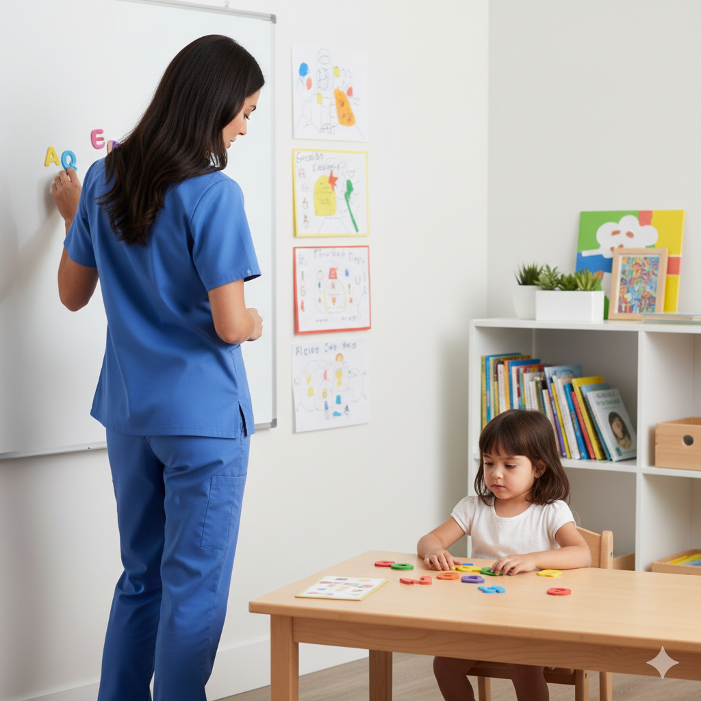

مؤسسة مجدوب للمصابين بالتوحد
Fondation Medjdoub pour Autistes


Personnel du centre
Directeur General
Mission: assure le bon fonctionnement du centre
Objectifs: préparer le projet de budget et les comptes du centre - ordonnancer les dépenses et les recettes – élaborer le bilan annuel des activités du centre
Nombre: 1
Profil: Diplôme universitaire et une expérience professionnelle dans le domaine de l’handicape
Comité scientifique
Mission: veiller à la qualité du contenu du programme de prise en charge de chaque PA et aux critères d’admission de celle-ci au centre
Objectifs: valider, proposer et mettre en œuvre des programmes et techniques de prise en charge appropriés pour chaque PA admise au centre
Nombre: 7
Profil: Psychologue, Pédopsychiatre, Orthophoniste, Ergothérapeute, Psychomotricien, Educateur spécialisée, Médecin généraliste, accompagnateur d’adaptation professionnelle
Comité administratif
Mission: veiller à la bonne marche administrative et logistique du centre
Objectifs: assurer la qualité de l’hygiène, de la sécurité et des moyens généraux du centre
Nombre: 3
Profil: tout diplôme ou compétence
Commanditaire
Mission: collecter les fonds pour le centre
Objectifs: le message du centre vers les donateurs public et prive et assurer la participation du centre à des événements et activités au profit de la société
Nombre: 1
Profil: tout diplôme ou compétence
Stagiaires
Mission: appliquer le contenu du programme de prise en charge de chaque PA du centre sous supervision du comité scientifique
Objectifs: la PA dans l’acquisition des compétences tel défini dans son programme individualise de prise en charge
Nombre: 8
Profil : Psychologue, Pédopsychiatre, Orthophoniste, Ergothérapeute, Psychomotricien, Educateur spécialisée, Médecin généraliste, accompagnateur d’adaptation professionnelle en cursus universitaires ou fraichement diplômé
Bénévoles
Mission: les efforts du personnel cité ci-dessus
Objectifs: selon ses compétences et sous supervision du comité scientifique aidera le centre dans les différents aspects de la prise en charge de la PA
Nombre: 8
Profil: tout profil universitaire et autre compétences
Capacité d’accueil
Consistance du centre

Programme Pédagogique
Contenu de la pris en charge
• Evaluations des compétences acquises, en émergences et déficientes
• Programme Personnalisé d’interventions, réalisé en associant les parents, établis sur la base des résultats des évaluations et inclut les objectifs et les moyens pour les réaliser concernant les domaines suivants :
La Communication fonctionnelle: comment la PA s’exprime et établit des échanges avec nous, est ce que la PA comprend ce que nous exprimons par la parole, le geste, l’image
structuration spatio-temporelle: la journée et les lieux de la PA sont organisés de façon à ce qu’ils soient compréhensibles par elle et correspondent à ses acquis
Compétences cognitives: les capacités de la PA qui lui permette de communiquer, percevoir son environnement, de se concentrer, d’accumuler des connaissances
habiletés sociales et capacités émotionnelles: régulations émotionnelle et troubles du comportements social au sein de l’école, lieu de travail (respect des règles sociales..)
L’autonomie: personnelle (s’occuper de soi) - domestique (s’occuper de soi et de l’autre) - sociale (utiliser les moyens de transports, avoir un travail rémunéré…)
Gestion du temps libre: qu’est-ce que je peux faire ?où ?quand ? combien de tps ? pratiquer de manière autonome des activités sportives, manuelles, artistiques…. Explorations des métiers, intérêts, dons….
Pole santé: soins dentaires - alimentation – sommeil - sexualité - rééducation sensoriels (texture d’aliments, vêtements) – relaxation (surcharge sensoriels : hypo/hyper sensibilités des sens)